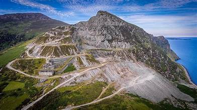
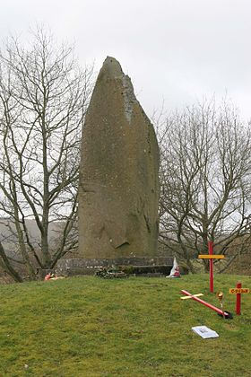
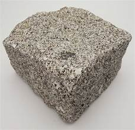

Auf der Westseite von yr Eifl befanden sich drei Granitsteinbrüche, die die Hauptarbeitgeber der Steinbrucharbeiter aus Lithfaen und Nant Gwrtheyrn waren: Chwarel y Nant (Nant Quarry), Chwarel Cae'r Nant (Cae'r Nant Quarry) und Chwarel Careg y Llam (Carreg y Llam Quarry). Carreg y Llam (Der springende Stein) ist angeblich der Ort, an dem King Vortigern in den Tod sprang, nachdem er erfuhr, was Hengist getan hatte.
Chwarel yr Eifl o'r Gogledd
Wenn Sie nach rechts schauen, sehen Sie den Gipfel des Garnfor, wo man deutlich Spuren der Steinbrucharbeiten erkennen kann. Von hier sehen Sie den hoechsten Punkt des Eifl Steinbruches, der umgangssprachlich auch Gwaith Mawr (grosser Steinbruch) genannt wird.
Der Steinbruch produzierte Pflastersteine, um die Straßen der Städte zu pflastern. Die Pflastersteine waren 10cmx10cm gross und wurdern setsan oder ciwban genannt.
Maen coffa Llywelyn ein Llyw Olaf, Cilmeri
Es ist kaum zu glauben, dass ein gut ausgebildeter Arbeiter 140 solche Pflastersteine am Tag produzieren konnte. Es gab eine Menge Migration zwischen Penmaenmawr (ein weiteres Gebiet, in dem Pflastersteine produziert wurden) und yr Eifl. Die Steinbrucharbeiter reisten auf der Suche nach Arbeit auch in den Norden Englands, nach Schottland und nach Cornwall.
Samuel Holland, einer der Pioniere der Schiefersteinbrüche in Nordwales, entdeckte den Granit in Chwarel y Gwylwyr (Gwylwyr Steinbruch) in Nefyn. Er fand auch hier die gleiche Art von Stein.
Set
Die erste Herstellung von Pflastersteinen geschah in Gorllwyn in der frühesten Ära (ca. 1836-40). Der Steinbruch wurde 1850 unter dem Namen The Welsh Granite Company Limited eröffnet. Bis 1865 wurden Pferde verwendet, um die Wagen zu ziehen. 1870 war der Pier fertig, und 1873 zog eine Dampfmaschine die Waggons zum Pier. Das Dorf Trefor wurde aufgrund des durchschlagenden Erfolgs des Steinbruchs nach Trefor Jones, dem damaligen Steinbruchmanager, benannt.
Das Gestein von Trefor war von besonders guter Qualität und war hervorragend fur die Herstellung von Pflastersteinen geeignet. Es war geeignet um schweren Lasten und Transporten zu widerstehen und neigte nicht zum rutschig werden wie Gestein aus anderen Gegenden. Deswegen war die Nachfrage gross, der Steinbruch wurde immer groesser und mehr und mehr Arbeiter strömten nach Trefor. Es wurde eine Ebene nach der anderen eroeffnet, bis sich im Steinbruch insgesamt neun Ebenen befanden, die bis zum Gipfel des Berges reichten und jeweils etwa 30 – 40 Meter hoch waren. Zu Beginn des 20. Jahrhunderts arbeiteten etwa 600 Menschen im Steinbruch. Bis 1930 hatte er 1.157.000 Tonnen Pflastersteine produziert und war zum größten Granitsteinbruch der Welt geworden.
Als nach dem zweiten Weltkrieg die Arbeit im Steinbruch wider aufgenommen wurde haben sie einen Brecher gebaut, um die Steine zu Splitt zu zerkleinern, der zu dieser Zeit mit der Einführung von Asphalt den Pflastersteinen vorgezogen wurde. Grabsteine und Denkmäler, Walzen zur Herstellung von Papier und Curlingsteine wurden hergestellt, und in den späten 1960er Jahren beschäftigte der Steinbruch nur etwa 50 Mitarbeiter, da Maschinen den größten Teil der Arbeit erledigten.
Die Gedenksteine für Llywelyn ap Gruffydd, ein Llyw Olaf (Unser letzter Herrscher), Hen Ŵr Pencader (Der alte Mann von Pencader) und I.D.Hooson wurden aus Granit von Trefor produziert.